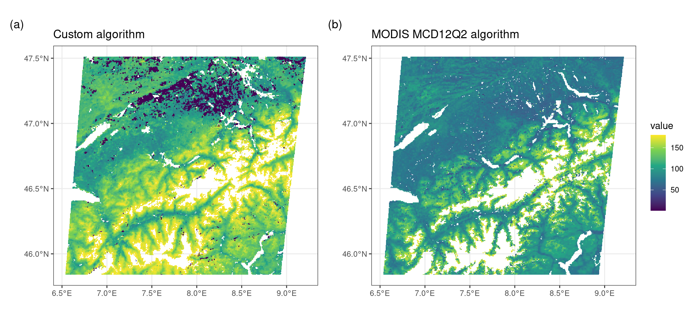

5 Phenology algorithms
The example above illustrating Hopkin’s law and the explicit temperature sensitivity of vegetation phenology to changes in temperature shows the importance of monitoring these changes within the context of climate change. In the previous example we have used an operational land surface vegetation phenology product.
Many products exist, depending on the remote sensing platform or data used, and cover a wide range of spatial scales. For example the HR-VPP product allows for continuous vegetation monitoring using 10m resolution Sentinel-2 data, while the previous example relies on 500m resolution MODIS data. While MODIS provides a landscape wide measure of vegetation phenology the spatial scale of Sentinel-2 and near real time data allows for fine grained assessments of crop growth.
5.1 Algorithms
Most phenology products rely on a limited set of algorithms, or various iterations of them. Throughout both implementations and scientific literature we can divide the methods used in two categories:
- curve fitting
- threshold based methods
The curve fitting approach fits a prescribed model structure to the data, by varying a number of parameters. This functional description of the vegetation growth can then be used to derive phenology metrics by considering various inflection points of this function. Common approaches here are to use the first or second derivative of a fitted function (and zero crossings) to determine when large changes in vegetation phenology happen.
The most simple approach around, used with or without explicit curve fitting, is the use of a simple threshold based method. Here, a phenology event is registered if a given vegetation index threshold is exceeded (Figure 5.1). Although scaling these products for global coverage is challenging creating your own algorithm and implementing it on a local or regional scale is fairly simple. Below I will show you how to calculate phenology for a vegetation index time series, for the region outlined in Chapter 4 .
5.1.1 Acquiring demo data
To get started we need to download some additional information, in particular vegetation time series. In this example, and to lighten the download requirements, I will use Leaf Area Index (LAI) data instead of the more common EVI or NDVI time series used in phenology products.
# download data
df <- MODISTools::mt_subset(
product = "MCD15A3H",
lat = 42.536669726040884,
lon = -72.17951595626516,
band = "Lai_500m",
start = "2002-01-01",
end = "2022-12-31",
km_lr = 0,
km_ab = 0,
site_name = "HF",
internal = TRUE,
progress = TRUE
)5.2 Data quality control
Many data products have data quality flags, which allow you to screen your data for spurious values. However, in this example I will skip this step as the interpretation/use of these quality control flags is rather complex. The below methodology is therefore a toy example and further developing this algorithm would require taking into account these quality control metrics. Instead a general smoothing of the data will be applied.
5.3 Data smoothing / interpollation
We first multiply the data with their required scaling factor, and transform the date values to a formal date format and split out the individual year (form the date).
# scale values appropriately
df$value <- df$value * as.numeric(df$scale)
# convert dates to proper date formats and
# convert the date to a single year
df <- df |>
mutate(
date = as.Date(calendar_date),
year = as.numeric(format(date, "%Y"))
) |>
filter(
year > 2002
)Smoothing can be achieved using various algorithms, such as splines, loess regressions. In this case, I will use the Savitsky-Golay filter, a common algorithm used across various vegetation phenology products. Luckily the methodology is already implemented in the signal package.
# load the signal library
library(signal)
# smooth this original input data using a
# savitski-golay filter
df <- df |>
mutate(
smooth = signal::sgolayfilt(value, p = 3, n = 31)
)Note that the sgolayfilt() does not allow for NA values to be present to function properly. As such, we operate on the full data set at its original time step. Since data is only provided at a 8-day time interval you would be limited to this time resolution in determining final phenology metrics when using a threshold based approach.
To get estimates close to a daily time step we need to expand the data to a daily time-step and merge the original smoothed data.
# expand the time series to a daily time step
# and merge with the original data
expanded_df <- dplyr::tibble(
date = seq.Date(min(df$date), max(df$date), by = 1)
)
df <- dplyr::left_join(expanded_df, df)Expanding the 8-day data to a 1-day timestep will result in NA values. I will use a simple linear interpolation between smoothed 8-day values to acquire a complete time series without gaps.
# non NA values
no_na <- which(!is.na(df$smooth))
# finally interpolate the expanded dataset
# (fill in NA values)
df$smooth_int <- signal::interp1(
x = as.numeric(df$date[no_na]),
y = df$smooth[no_na],
xi = as.numeric(df$date),
method = 'linear'
)Code
# quick plot
plot(
df$date,
df$value,
type = "p",
col = "red",
xlim = c(
as.Date("2003-01-01"),
as.Date("2005-01-01")
)
)
lines(df$date, df$smooth_int)
5.4 Phenology estimation
With all data prepared we can use an arbitrary threshold to estimate a transition in LAI values for a given year. In the below example we use a LAI value of 3 to mark if the season has started or ended.
phenology <- df |>
group_by(year) |>
summarize(
SOS = date[which(smooth_int > 3)][1],
EOS = last(date[which(smooth_int > 3)])
)Code
# plot the phenology dates on the previous plot
# (update graph)
plot(
df$date,
df$value,
type = "p",
col = "red",
xlim = c(
as.Date("2003-01-01"),
as.Date("2005-01-01")
)
)
# vertical lines at phenological dates
abline(v = phenology$SOS)
abline(v = phenology$EOS)
Obviously this does not translate well to other locations, when vegetation types and densities vary from place to place. Scaling the time series between 0 and 1 will regularize responses across time series. Rescaling the data to a fixed range between 0 and 1, resolves this issue.
# potential issues?
# - fixed LAI threshold (varies per vegetation type)
# - does not account for incomplete years
# - provides absolute dates (not always helpful)
df <- df |>
group_by(year) |>
mutate(
smooth_int_scaled = scales::rescale(
smooth_int,
to = c(0,1)
)
)Now we can use a relative amplitude (0 - 1) across locations. This ensures a consistent interpretation of what phenology represents. In case of a threshold of 0.5, this would represent the halfway point between a winter baseline and a summer maximum (leaf development). Commonly, one uses multiple thresholds to characterize different phases of the vegetation development. For example, a low threshold (~0.25) characterizes the start of the growing season, while a higher (~0.85) threshold marks the end of vegetation development toward summer.
As before, we can now apply relative thresholds (of 0.25 and 0.85) to our time series, to mark the start of the season and maximum crown development. We can reverse this logic, and use the same thresholds on the latter part of the seasonal trajectory and calculate the start of leaf senesence (death) and full leaf loss.
# calculate phenology dates
# using a 0.5 (50%) threshold
# SOS: start of season
# MAX: max canopy development
# SEN: canopy sensesence
# EOS: end of season
phenology <- df |>
group_by(year) |>
summarize(
SOS = date[which(smooth_int_scaled > 0.25)][1],
MAX = date[which(smooth_int_scaled > 0.85)][1],
SEN = last(date[which(smooth_int_scaled > 0.85)]),
EOS = last(date[which(smooth_int_scaled > 0.25)])[1]
)
phenology <- phenology |>
filter(
year > 2002,
year < 2005
)Plotting these results for a limited set of years shows how phenology dates for different years and thresholds.
Code
# plot the phenology dates on the previous plot
# (update graph)
plot(
df$date,
df$value,
type = "p",
col = "red",
xlim = c(as.Date("2003-01-01"),as.Date("2005-01-01"))
)
lines(df$date, df$smooth_int)
abline(v = phenology$SOS, col = "lightgreen", lwd = 2)
abline(v = phenology$MAX, col = "green", lwd = 2)
abline(v = phenology$SEN, col = "brown", lwd = 2)
abline(v = phenology$EOS, col = "red", lwd = 2)
5.4.1 Spatial phenology estimates
# load buffered data, not shown in render
r <- terra::rast(here::here("data/LAI.tiff"))The above example introduced the very basics of how to deal with a simple time series and develop a proof of concept. However, to scale our example spatially you need a way to process data along space and time axis. As introduced earlier, the terra package allows you to manipulate 3D data cubes (along latitude,longitude, and time axis).
# Download a larger data cube
# note that I sample a 100x100 km
# area around the lat/lon location
lai_2012 <- MODISTools::mt_subset(
product = "MCD15A3H",
lat = 46.6756,
lon = 7.85480,
band = c("Lai_500m"),
start = "2012-01-01",
end = "2012-12-31",
km_lr = 100,
km_ab = 100,
site_name = "swiss",
internal = TRUE,
progress = TRUE
)
# save this data for later use
# to speed up computationHowever, data downloaded using MODISTools by default is formated as tidy (row oriented) data.
# conversion from tidy data to a raster format
r <- MODISTools::mt_to_terra(r)Remember the algorithm for a single time series above. To make this collection of steps re-usable we define a function. This allows you to run the routine across several pixels (at once). It is also a requirement for executing computational work on a multi-layer terra data cube.
Below I wrap the steps as defined in Section 5.4 in a single function which takes a data frame as input, a phenological phase and threshold value (0 - 1) as parameters. For this example we set the parameter to 0.5, or half the seasonal amplitude.
phenophases <- function(
df,
return = "start",
threshold = 0.5
) {
# split out useful info
value <- as.vector(df) * 0.1
# if all values are NA
# return NA (missing data error trap)
if(all(is.na(value))) {
return(NA)
}
date <- as.Date(names(df))
# smooth this original input data using a
# savitski-golay filter
smooth <- signal::sgolayfilt(value, p = 3, n = 31)
# expand the time series to a daily time step
# and merge with the original data
date_expanded <- seq.Date(min(date, na.rm = TRUE), max(date, na.rm = TRUE), by = 1)
smooth_int <- rep(NA, length(date_expanded))
smooth_int[which(date_expanded %in% date)] <- smooth
# non NA values for interpolation
no_na <- which(!is.na(smooth_int))
# finally interpolate the expanded dataset
# (fill in NA values)
smooth_int <- signal::interp1(
x = no_na,
y = smooth_int[no_na],
xi = 1:length(smooth_int),
'linear'
)
# rescale values between 0 and 1
smooth_int_scaled <- scales::rescale(
smooth_int,
to = c(0,1)
)
# thresholding for phenology detection
phenophase <- ifelse(
return == "start",
date_expanded[
which(smooth_int_scaled > threshold)
][1],
last(
date_expanded[
which(smooth_int_scaled > threshold)
][1]
)
)
# convert to doy
doy <- as.numeric(format(as.Date(phenophase, origin = "1970-01-01"),"%j"))
return(doy)
}With the function defined we can now apply this function to all pixels, and along the time axis (layers) of our terra raster stack. The app() function allows you to do exactly this! You can now apply the above function to the time component (z-axis, i.e. various layers) of the LAI data cube.
# apply a function to the z-axis (time / layers) of a data cube
phenology_map <- app(r, phenophases)5.4.2 Inference and comparisons to actual products
You now have output from our custom algorithm, and the previously downloaded MODIS (MCD12Q2) phenology data product. You can therefore easily compare both outputs.
Code
library(ggplot2)
library(tidyterra)
library(patchwork)
# truncate things to first half of the year
phenology_map[phenology_map > 180] <- NA
phenology_raster[phenology_raster > 180] <- NA
p <- ggplot() +
geom_spatraster(data=phenology_map) +
scale_fill_viridis_c() +
labs(
title = "Custom algorithm"
)
p2 <- ggplot() +
geom_spatraster(data=phenology_raster) +
scale_fill_viridis_c() +
labs(
title = "MODIS MCD12Q2 algorithm"
)
# p3 <- ggplot() +
# geom_spatraster(data=abs(phenology_raster - phenology_map)) +
# scale_fill_viridis_c()
p | p2